The feel
This is chiaroscuro as some comics use it: hard, blocked-in blacks against clearly defined shapes in white.1 Mike Mignola, whose comics the art leads of both Darkest Dungeon and Hades name as an influence,2,3 said in 1994 that his work was at least 50% black, and that what mattered was what the reader doesn't see: the bits that do show suggest things he never drew.4 Chris Bourassa made Darkest Dungeon's opening image stark, hard-edged and high in contrast to foreshadow how difficult and uncompromising the game would be.2
The black does the organising. Noel Sickles, who developed the technique on a newspaper strip, knew that heavy black areas always draw attention to themselves, and that the eye does not see a diagram but "the shapes of the shadows left by the light source".5 Strong linework lets Bourassa splash unexpected hits of colour onto objects without hurting their readability.2
- stark
- graphic
- brooding
- mythic
- hand-inked
- torchlit
Where it comes from
Noel Sickles worked out the method on the newspaper strip Scorchy Smith in 1934 and 1935, using black for shadow where most strips used it as a colour, and his studio mate Milton Caniff made it famous in Terry and the Pirates.5 From the late 1980s Mike Mignola built his comics on a chiaroscuro of hard blacks and clear white shapes, with the large, readable shapes of Jack Kirby and Alex Toth;1 thick black ink flooded his pages on Gotham by Gaslight in 1989, and Hellboy followed in 1994.6 Chris Bourassa, Darkest Dungeon's only artist, started from medieval woodcuts and Albrecht Dürer and added a modern comic-book sense, from Mignola, Guy Davis and others, for its pose-to-pose combat.2 Supergiant first planned a painterly Hades, then switched to pen and ink when the story changed in preproduction, with Mignola among its influences.3 Hellboy: Web of Wyrd has since rebuilt Mignola's look in 3D,7 and Darkest Dungeon II paints its 3D characters with the first game's brushes.8
Core elements
Solid black shadows
Shadows are filled with solid black instead of being shaded. Mignola's style rests on hard, blocked-in blacks against clearly defined white shapes,1 and by 1994 his work was at least 50% black.4 Sickles let unimportant props all but vanish into shadow.5
A single light source
Light comes from one side. With a single light in the room, half a figure falls into shadow, and only high points such as a cheekbone or the top of an ear catch the light.5 Web of Wyrd changed how its lighting is calculated so that lights never add up, because in the comics a surface is either black or lit.7
Painted colour inside the ink
Colour is painted inside the ink. Bourassa kept black and dead grey out of everything but Darkest Dungeon's inks and kept the colour warm, so even cool hues lean slightly yellow.2 In Mignola's pages, Hellboy's red grabs the eye, and the only other red on the page is blood.6 Hades' 3D characters are painted by hand, with the lighting turned off, to match the 2D art.9
Hand-inked line work
The line is drawn by hand. Darkest Dungeon's 2D art was drawn entirely by hand,8 and its look is coarse and loose.2 Even Hades' 3D models get a black line art layer painted over everything to match the 2D look, and Supergiant's 3D artist calls that line work her favourite part of the process.9
A dominant hue for each place
Each place has its own colour. Bourassa gave every dungeon a dominant hue, then peppered in analogous and complementary hits for contrast.2 He took the cue from Frazetta, who used a wide array of hues on everything from biceps to horses' hooves.2
Portrait-first characters
Characters are drawn first as 2D portraits, and the 3D models are matched to them. Hades shipped 59 portraits,3 and Nyx's model was based directly on hers: Supergiant's 3D artist keeps the portrait behind the sculpt and compares the faces feature by feature.9
How to do it
Place a single light
Decide where the one light is before you ink. Everything has a side away from it: Sickles drew the lit side of a face in fine pen lines and let the far side go to black, leaving only a cheekbone or the top of an ear in white.5 In 3D, add a light that follows the camera and keeps characters in relief when the angle is bad, as Web of Wyrd does for Hellboy and every living thing.7
Brush in the blacks first
After pencilling, fill the shadows with a brush before drawing any outline. Sickles used a No. 3 series 7 watercolour brush for the shadows under the nose and in the backgrounds, then a crowquill pen, 170 or 303 point, for the outlines, and never used the brush on an outline; working brush first keeps the drawing simple.5 Use as much black as the picture will take. Roy Crane's advice was "Get all you can", but use it mainly to bring out the white.10
Join the shadows into big shapes
Run the blacks together into large shapes that tie each figure to the ground, as Mignola learned from Frazetta's paintings.4 Let small props sink into the dark, and let the shadow describe the form: Sickles suggested a train's rivets with half-circle nicks of black instead of drawing circles.5
Vary the line weight
Give foreground figures the thickest lines and background elements thinner ones, or put thick lines on outlines and thin ones on the detail inside them. A brush or nib swells and thins within one line, while a technical pen keeps it even. Once the black is dry, draw detail back into it with white ink.11
Plan a hue for each area
Plan the colour of the whole game early. Supergiant made a colour script for Hades to catch oddities and weak spots across the full experience.3 Give each area a dominant hue with analogous and complementary accents, keep black and dead grey for the inks, and warm the whole palette so even cool colours lean slightly yellow.2
Hand-paint the 3D textures
Model from the 2D portrait, then paint the textures with the lighting turned off. Start from a flat base colour, usually the skin tone, bake ambient occlusion, curvature and thickness maps to see where the features are, block in the colours on separate layers, and paint the black line work by hand on a layer above everything.9 Red Hook paints Darkest Dungeon II's characters with the same brush shapes and settings as the first game's 2D art, and draws environment pieces in 2D before modelling geometry to support them.8
Cut the 3D shading to two tones
Pass N·L, the dot product of the surface normal and the light direction, through a smoothstep from 0 to 0.01, which keeps a sharp edge between light and dark without jagged pixels.12 Don't let lights accumulate: Web of Wyrd recalculates its lighting so a surface is pure black or lit.7 For a rim, multiply one minus the dot product of view direction and normal by N·L raised to the power 0.1, so the rim only appears where the light falls, then pass the product through a smoothstep from 0.706 to 0.726, which puts its edge at 0.716.12
Cheat sheet
- Black
- At least half on Mignola's pages4
- Ink tools
- No. 3 watercolour brush for shadows, crowquill 170 or 303 for outlines5
- Line weight
- Thick on foreground figures, thin in the background11
- Black and dead grey
- In the inks only, never in the colour2
- Colour
- Warm overall, one dominant hue per area, analogous and complementary accents2
- Shadow edge in 3D
- smoothstep(0, 0.01, N·L)12
- Rim light in 3D
- Lit side only: edge at 0.716 on (1 − V·N) × (N·L)^0.112
Do
- Decide early that you will work with a lot of black, and write the style's rules down. Bourassa, Darkest Dungeon's only artist, found that rules he could externalise let him art direct himself.2
- Have the whole team read the source comics and talk through what makes the style, as Upstream Arcade did at the start of Web of Wyrd.7
- Show more than the comic would where play needs it. Mignola sometimes hides figures from the knees or waist down, but players need to know where their feet are, so Web of Wyrd shows them.7
- Choose ink when the asset list is long. Jen Zee found pen and ink much faster than painterly work on what she knew would be Supergiant's biggest game.3
- Leave out every line the shadows already explain. "The key to the style is eliminating unnecessary lines," said Sickles.5
Avoid
- Black everywhere. Deep in "black mode", Web of Wyrd's art director made a level where players walked into a room and could not see its far wall, and the team pulled some of the black back.7
- Scenes that are grey or all shadow. For a long stretch of Web of Wyrd's development the game looked grey about a third of the time and was otherwise just shadow with bits of rim light, until scene lights and a light that follows the camera fixed it.7
- A brown, dingy screen. Bourassa gave each dungeon its own hue and peppered in contrasting colour to avoid what he calls the "Brown and Dingy Eyeroll".2
- Rendering every detail in fine lines. Sickles saw his fine-line shading lost or run together on poorly printed newspapers, and found a complete rendering can be less lifelike than an impression.5
- Cutscenes in a different medium from the game. Web of Wyrd first filled some cutscenes with hand-drawn comic panels and found they accidentally introduced a third style, so the team moved those scenes into 3D vignettes to keep the game consistent.7
Tools and tutorials
- Inside Hades: 3D Modeling & Rigging
Supergiant's Paige Carter builds Nyx from her portrait and hand-paints the black line work.9
- Facing Our Failures: Creating 3D Environments from a 2D Legacy for Darkest Dungeon II
Marielle Fox, Red Hook's lead environment artist, at GDC 2024 on taking the 2D style into 3D.
- The Art of Hades II with Jen Zee
Game Informer's interview with Supergiant's art director about the sequel's art.
- Toon Shader
Two-tone lighting with smoothstep, plus a rim and specular, written for Unity.12
- Outline Shader
Screen-space edge detection for drawn-looking outlines in 3D, written for Unity.
Palette
Spotted black, underworld rust and flame yellow come from Hades' key art, Hellboy red and trench-coat tan from Mignola's Seed of Destruction cover, dungeon umber from the Darkest Dungeon heroes, witchfire green from Hades II's key art and bone white from the skulls in Hades' temple art.
Feel the vibe
In motion
Listen
Fast and heavy, with the drive of a run through hot red rooms; good company for blocking in big black shadows.
YouTubeSlower and darker, to suit the green and black of the sequel.
YouTubeGrim strings and drums with the weight of the game's torchlit inks.
YouTubeA slow, heavy march for long sessions of hatching and spotting blacks.
YouTubeQuiet and uneasy, for studying how a few flat black shapes carry a whole scene.
YouTube
More references

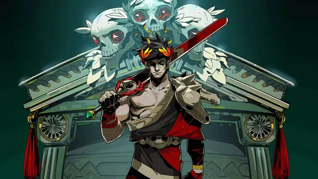

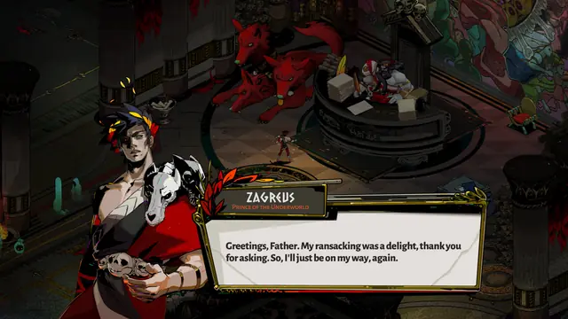

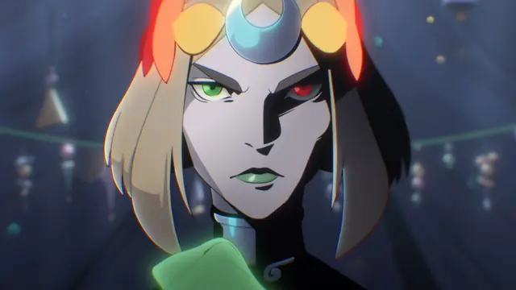

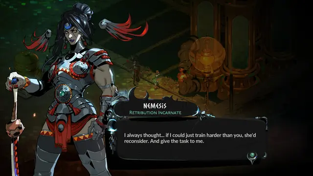

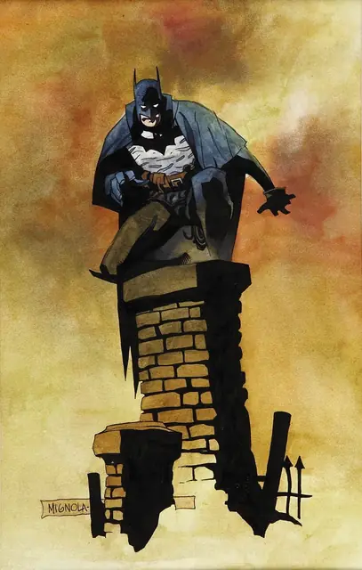

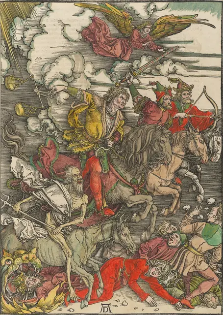

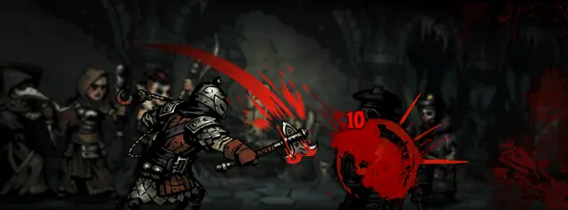

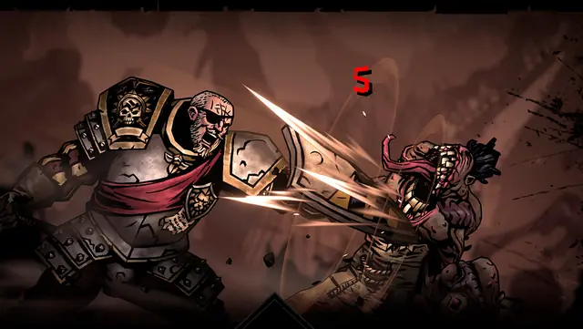

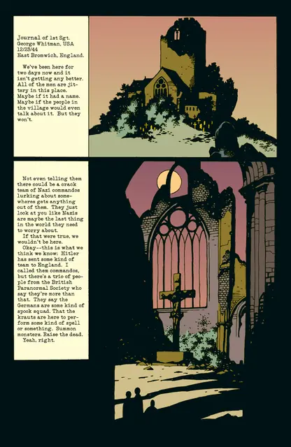

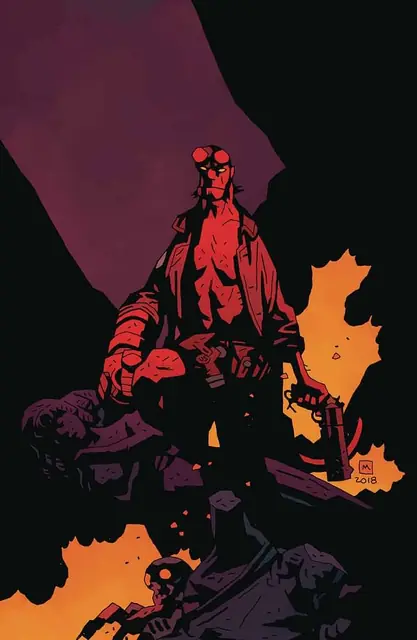

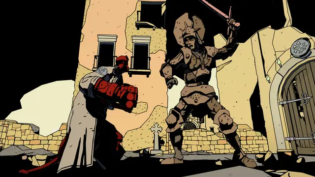
Games
- Darkest Dungeon
Study how black is kept for the inks while the colour stays warm, and how each dungeon gets its own hue.2
- Hades
Study the 59 portraits, and the 3D models painted with black line work to match them.3,9
- Darkest Dungeon II
The first game's brushes on 3D models, and environments drawn in 2D before they are modelled.8
- Hellboy: Web of Wyrd
Mignola's comics rebuilt in 3D, with lighting that leaves every surface black or lit.7
- Hades II
Study the portraits: the gods return in the first game's pen and ink with their looks evolved, beside new characters such as Hecate.3,13
Film, art and more
- Scorchy Smith
Where Sickles turned black from a colour into shadow, easing the change in over three or four months.5
- Terry and the Pirates
The strip that made Sickles's chiaroscuro famous.5
- Batman: Gotham by Gaslight
Where thick black ink floods Mignola's pages, after advice to add more shadows to strengthen his figures.6
- Hellboy: Seed of Destruction
At least half black, by Mignola's own count. Darkest Dungeon and Hades both name him as an influence.4,2,3
- Frank Frazetta's paintings
Mignola's big black connecting shapes come from studying them, and Bourassa took their wide range of hues.4,2
- Albrecht Dürer's woodcuts
Darkest Dungeon's starting point, and a source Mignola looks to as well.2,6
Sources
- 1The new Hellboy video game looks exactly like Mike Mignola drew it - and that's a good thing
- 2The Gothic Sensibilities of Darkest Dungeon
- 3Behind the art of Hades: “We value artistic integrity and excellence in artistic craft at Supergiant, however we’re first and foremost a game design-led team.”
- 4Revisiting A Mike Mignola Hellboy Interview Before Seed Of Destruction Was Released In 1994
- 5The Unsung Sickles: How Noel Sickles Developed the Chiaroscuro Technique that Milton Caniff Made Famous
- 6Mike Mignola: To Hellboy & Back Again
- 7How Hellboy: Web of Wyrd Recreated Mike Mignola’s Signature Style for New Game
- 8How a theme of 'a road trip from hell' would shape Darkest Dungeon II
- 9Learn how Supergiant brought Hades' hand-painted characters to life
- 10The Value of Black
- 11Do You Speak Comics? Part 3: Black Ink, White Paper
- 12Toon Shader
- 13"It's the perfect amount of creative challenge": How we made the Hades II artwork